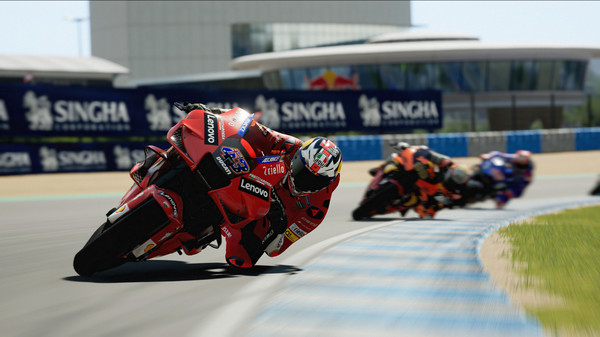

MotoGP™21

驶上发车格，准备体验迄今为止最真实、最具有沉浸感的MotoGP™游戏。
全新版本的MotoGP™21带来原汁原味的二轮竞速体验！
最佳MotoGP™
带来包含MotoGP™、Moto2™和Moto3™级别赛事的完整2021赛季。游戏收录了超过120位官方车手和20条赛道，加入多项改良和全新功能，并首次引入长圈惩罚，带来无比真实且原汁原味的二轮竞速体验。
更有40多位赫赫有名的历史车手与他们标志性的赛车带你重历MotoGP™历史。
规划比赛
开启管理生涯：加入官方车队或创建全新的车队，进行全方位管理；挑选车队成员：专业人士组成的团队会协助你完成赛季比赛，实现管理生涯，包括帮助你做出至关重要的决定，例如选择最符合车队利益的合约，或是把控摩托车研发方向。
带领车队闯入顶级赛事之后，你还可以组建车队自己的青年车队，从年轻车手抓起，把控方方面面。
掌控每一个细节
你需要管理和控制比赛的方方面面，从携带的燃料到刹车温度，再到轮胎磨损，你的每一个决定都至关重要。请根据你的驾驶风格和赛场上的状况作出关键决策。
赛出风格
无论是比赛风格，还是着装风格，在MotoGP™21里，风格就是一切。使用编辑器来自定义头盔、赛车服、贴纸、赛车号码和涂装，尽情展现你的个人风格！
或者用你独树一帜的驾驶风格让所有人眼前一亮！除此之外，我们基于机器学习的神经学习型人工智能又有了长足的进步。准备好在扣人心弦的比赛中应对A.N.N.A.的全新挑战吧！
在线挑战你的好友，让竞争更添乐趣；启用赛事总监模式，创建你的专属活动。专属服务器可避免网络延迟的烦恼，享受流畅的疾速比赛体验。
系统需求
最低配置:
需要 64 位处理器和操作系统
操作系统: Windows 8.1 64-Bit or later
处理器: Intel Core i5-3470, AMD FX-6350 or equivalent
内存: 8 GB RAM
显卡: NVIDIA GeForce GTX 1050 with 2 GB VRAM or more, AMD Radeon HD 7950 with 2 GB VRAM or more
DirectX 版本: 11
存储空间: 需要 22 GB 可用空间
推荐配置:
需要 64 位处理器和操作系统
操作系统: Windows 8.1 64-Bit or later
处理器: Intel Core i7-5820K, AMD Ryzen 5 1500X or equivalent
内存: 16 GB RAM
显卡: NVIDIA GeForce GTX 1060 with 6 GB VRAM or more, AMD Radeon RX 5700 with 6 GB VRAM or more
DirectX 版本: 11
存储空间: 需要 22 GB 可用空间